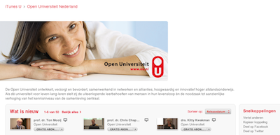

4.7 iTunesU/YoutubeEdu
Starting from a huge content repository including the digitialized
legacy of the Open Universiteit we have in 2009 started a project to
launch iTunes U for the Open Universiteit. Basically the project
included several aspects:

- Multiformat conversion and handling of video content
- Meta-tagging and media feed generation for media
- Mapping existing content structures onto the iTunes U structures as collections, albums, artists, etc.
- Setting up workflows for automatic format conversion, watermarking, post-processing (Intro, Outro, Disclaimer)
- Setting up internal structures for sustainable content production and enabling 1-click procedures for educators.
As a result we have established a general workflow at the Open Universiteit enabling educators to:
- submit videos and collections of recordings
- metatag these and mark them for public delivery
- the system automatically
- downloads new submissions,
- converts them
- does the post production,
- publishes the content to iTunes U and Youtube EDU and
- sends an mail to the user when all these steps are done
All steps are repeated when content is updated or metadata is chnaged by end users in the video portal of the Open Universiteit.